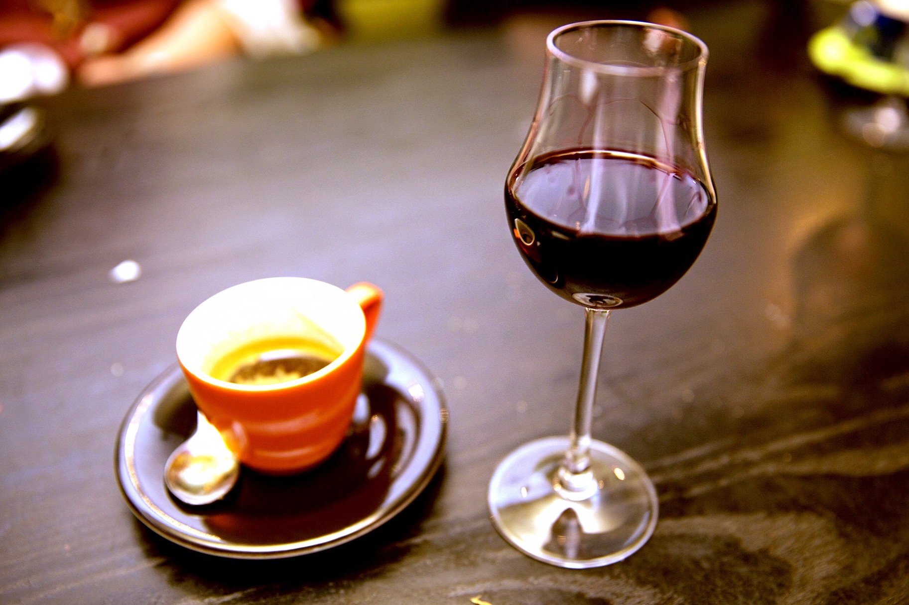
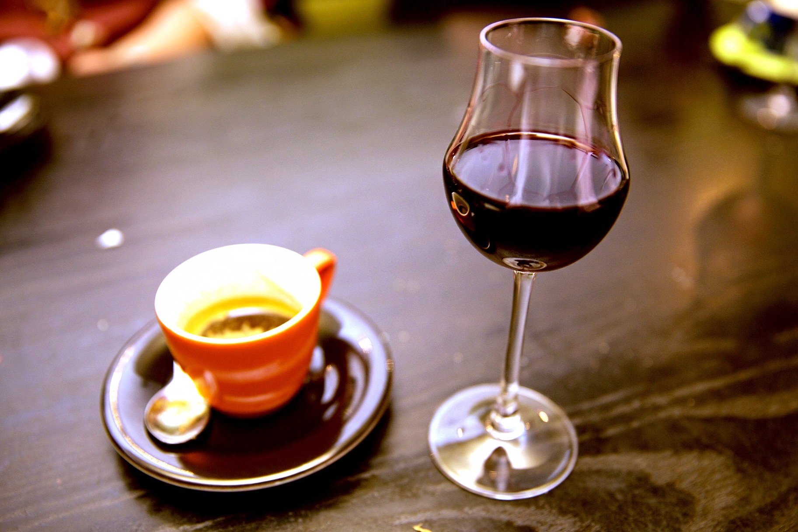

$2–3.00
$3.50–4.00
Brewed coffee with steamed milk
$3–4.00
$3.00
A double shot of espresso with a touch of steamed milk
$3.25
A double shot of espresso with an equal amount of steamed milk
$3.50
A double shot of espresso with 6oz of steamed milk
$3.75
A double shot of espresso with 10oz of steamed milk
$4.25
A double shot of espresso with 10z milk over ice
$4.25
A double shot of espresso with house made chocolate and 10oz steamed milk
$4.75
A double shot of espresso with house made chocolate sauce and 10oz milk over ice
$4.75
A double shot of espresso with hot water
$3.50
A double shot of espresso with iced water
$3.50
Brewed coffee with a double shot of espresso
$3.50–4.00
Cold brew coffee with a double shot of espresso
$4–4.50
Locally brewed espresso and choice of milk. Flavoured with burnt sugar and cardamom. Deep roasted and nutty with a delicate floral note
$4.75
A double shot of espresso shaken with sweetened condense milk over ice
$4.00
A double shot of espresso with tonic water over ice
$4.25
The flavour of one our favourites, pistachio, paired with smooth coconut served over local Espresso with your choice of milk
$4.75
The flavor of one of our favorites, pistachio, paired with smooth coconut served over locally brewed espresso with your choice of milk served over ice
$4.75
Hayman's Gin, Dolin Rouge Vermouth, Campari. The classic Italian cocktail in 4oz or 8oz bottles
$9–18.00
Sazerac Rye, Dolin Rouge, Angostura Bitters. Your choice of 4oz or 8oz of this classic cocktail
$9–18.00
Aperol Apertivo, Prosecco. A classic low ABV cocktail
$9.00
Local cold brew coffee, Tullamore Dew Irish Whiskey, hint of sugar. 8oz bottle
$12.00
Pink peppercorn, Cassis, Mezcal, Lemon, Grapefruit, Vanilla salt
$10.00
Gin, Pineapple Red Pepper Shrub, Lime, Shiso Bitters
$10.00
The brunch classic. Sparkling wine, and orange juice
$8.00
Our take on the classic brunch drink, with your choice between vodka, gin, or tequilla
$10.00
A vibrant, fresh Lambrusco with a touch of sweetness and a wonderful tart finish. 250mL can, 9.5% ABV
$7.00
White wine with distinct acidity, freshness, and a delicately round flavour from Lodi, California. This 375mL can is the equivalent of a half bottle of wine
$11.00
A light and refreshing can of rosé for all year round. Organic and biodynamically grown Grenache, Syrah and Cinsault from the Languedoc in southern France. 250ml can, 12.5% ABV
$8.00
Xarel-lo, Macabeo, and Parelladad, Casas del Mar, Catalonia, Spain
$8–25.00
Vermentino, Château Maris, France, 2018
$9–34.00
Pinot Noir, Pas De Problème, Vin de France, France, 2019
$10–30.00
Touriga Nacional, Ruth Lewandowski, California, United States, 2020
$12–40.00
Grecanico Dorato, Sikelè, Terre Siciliane, Sicily, 2016
$8–24.00
Italian pale lager. 11.2oz can, 5.1% ABV
$3–12.00
The New York classic. Perfect for all occassions. 12oz can, 4.5% ABV
$3.00
This fruited blackberry guava gose has the colour and tartness to liven up the cold winter months. 16oz can, 4.4% ABV
$7.50
This rhuhbarb spritz cideer from the Hudson Valley is peachy pink in colour, crushable, and wonderfully refreshing
$6.00
Floral, soft, juicy, and medium bodiedd double IPA
$10.50
A banger tart gose style beer fermented with apricots and mangoes
$11.00
The WNY created and adored grapefruit ale meant to be enjoyed on a patio
$5.00
A Belgian style blonde ale
$6.50